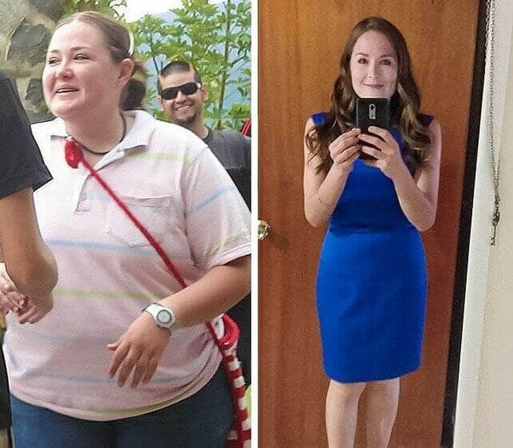
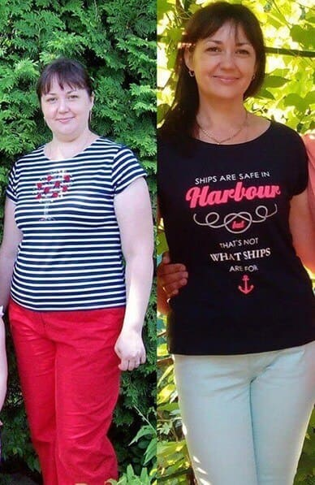

Как свалих 54 кг и запазих семейството, любовта и съпруга си
Искам да разкажа моята история, която ще помогне на много момичета да запазят любовта и семейството си. Казвам се Борислава. Живея в град Шумен, в източна България. Доколкото си спомням, винаги съм била пълничко момиче. Следователно никога не бях успешна в отношения с противоположния пол.
Опитах се да отслабна няколко пъти – бях на диети, ходех на фитнес, но нищо не се получаваше. Когато свалях няколко килограма, бързо ги връщах отново.
Всъщност, за да може човек, който е склонен към наднормено тегло, да поддържа теглото си нормално, е необходимо постоянно стриктно да спазва диета и редовно да се занимава с физически упражнения. А това изисква желязна воля. Уви, нямам я и никога не съм я имала.
26 години. Тегло 118 кг, ръст 169 см
Когато бях на 26, срещнах Николай. Изведнъж забелязах, че въпреки килограмите ми (и тогава тежах 118 кг при ръст 169 см), той проявяваше интерес към мен. Страхувах се да повярвам! Но се случи чудо – Николай ми направи предложение и ние изиграхме сватба!
Трябва да кажа, че Николай също не беше слаб, така да се каже, добре охранен. Но, разбира се, не изглеждаше толкова грозно като мен.

Николай и аз в миналия ни живот
Малко след сватбата двамата с Николай поискахме да имаме бебе. Но първата ми бременност завърши със спонтанен аборт в 3-ия месец. След това, шест месеца по-късно, се случи още нещо. Отидохме в столицата, в центъра за семейно планиране, преминахме необходимите тестове. Оказа се, че с Николай всичко е наред. При мен обаче откриха твърде високи нива на хормона лептин, който провокира спонтанни аборти. Лекарите постановиха присъдата си: «Ако искате да имате дете, трябва да отслабнете!» Но как?
Съпругът ми и аз разбрахме за новата модна кетонна диета. Същността ѝ е да наблегнете на протеини и мазнини вместо въглехидрати. Тогава черният дроб започва да произвежда специални вещества – кетонови тела, които активно изгарят телесните мазнини, превръщайки ги в енергия. За да ме подкрепи, съпругът ми също реши да премине на кето диета.
Между другото, тя му помогна. За 3 месеца той успя да свали 25 кг и се превърна в истински красив мъж!
На мен обаче кето диетата не ми пасна. В крайна сметка тя включва не само консумацията на мазни храни, но и периоди на гладуване, за стимулиране на производството на кетоновите тела, както и посещение на фитнес залата. Николай има силна воля и той успя да се накара да направи всичко това. Уви, аз не можах да надмогна себе си. Гладът беше нещо немислимо за мен. Почнах да ходя на фитнес, за да подкрепя Николай и за да не се взира в стройните момичета.
Ходих на фитнес за шоу и да се грижа за Николай
Изведнъж разбрах: Николай може да ме остави! Наоколо има толкова много стройни момичета! И самият той се превърна в красив мъж. Бях отчаяна! Какво да правя? Как да запазим любовта и семейството?
Тогава на самата мен дойде на помощ... Николай! Той научил, че в София се набира експериментална група за тестване на нов препарат, чийто принцип се основава на кето диета. Само че има съществена разлика. Не е необходимо да ядете мазни храни и след това да гладувате, за да накарате организма да произвежда кетони. Този препарат вече съдържа естествени вещества, които са подобни по действие на кетоновите тела.
Този препарат се нарича . В основата му са средноверижни триглецириди. Тези вещества се извличат от естествени растителни компоненти, следователно не вредят на организма и освен това имат изключително висока ефективност – по действието си те надминават собствените ни човешки кетонови тела с повече от 15 пъти!
Веднага отидохме в София и аз успях да се запиша в тази експериментална група. Помогна ми и записът в медицинската ми карта, направен в Столичния център за семейно планиране, за това, че да зачена и родя дете, трябва да отслабна.
Трябва да кажа веднага, че отслабването никога не е било толкова удобно, както с този препарат! Това са капки, които трябва да се приемат с чаша вода. Няма хранителни ограничения. Нещо повече, лекарите настояват човек да се храни по същия начин, по който е ял, преди да почне да приема , за да не се стресира организмът.
И така, започнах да приемам . Теглото ми в началото на експеримента беше 118 кг.
През първата седмица отслабнах само с 2 кг. Много скромен резултат. Но лекарите казаха, че трябва да е така. Организмът се пренастройва към активно изгаряне на мазнини. Но през следващите седмици губих по около 1 кг на ден! Буквално се стопих пред очите си! Бях развълнувана и възторжена и направих снимки на новото си тяло.
На първата снимка тежа 118 кг и безуспешно се опитвам да отслабна във фитнеса. На втората снимка теглото ми е 86 кг. Това е след 4 седмично сваляне на тегло. На третата снимка теглото ми е 64 кг. Това стана след 6 седмици прием на
Но още по-голямо удоволствие ми достави не новата ми визия, а възхищението, което видях в очите на Николай!
След 6 седмици отслабване тежах 64 кг. Лекарите казаха, че това е идеалното тегло за мен и спрях да приемам .
Мина една година
Какво се случи през годината, когато живеех с новото си тяло. Най-важното е, че теглото ми остана същото – 64 кг. Лекарите не са сгрешили. успя да нормализира метаболизма ми и сега нямам нужда да приемам нещо, за да поддържам теглото си нормално.
Лекарите също препоръчват да започнете да се опитвате да заченете дете 12 месеца след края на програмата за отслабване. Тялото се нуждае от време, за да пренагласи функционирането си към новото тегло. Ние с Николай направихме точно това. Чакахме една година и се радвахме един на друг.
Такива сме сега – на почивка в Мароко
И сега най-важното – бременна съм! Ще имаме бебе и сега съм абсолютно щастлива!
Коментар на специалист
Доктор по медицински науки, професор, заместник-директор на Столичния център за семейно планиране
е разработен от екип учени с подкрепата на СЗО. Той олицетворява всички най-нови разработки в областта на метаболизма в човешкото тяло.
1. Пълната безопасност на препарата. Той е направен от растителни вещества и не изисква никакви диети, тоест няма риск човек да се лиши от добро хранене и прием на всички необходими за организма вещества.
2. Активно изгаряне на мазнини във всички части на тялото, включително проблемните зони – бедрата, задните части и др.
3. Появява се много енергия, подобрява се настроението.
4. Нормализиране на метаболизма. След края на приема човек не наддава.
5. Подобрява се състоянието на кожата и косата.
6. Хормоналният баланс се нормализира, което дава възможност на някога пълни жени да заченат.
Колегите ми от Софийския център за семейно планиране и аз препоръчахме няколко наши пациенти за групата за изчерпателни проучвания на , която включва 167 доброволци, които имат затлъстяване от 1 до 4 степен. В резултат на приема на загубата на тегло е регистрирана при 100% от участниците. В същото време при 98% теглото напълно се нормализира.
Въз основа на резултатите от изпитвания препоръчахме да се разреши продажбата на в България. За да осигурим за българите това лекарство възможно най-скоро, ние, заедно с офиса на СЗО в страната, организирахме продажбата на чрез българската версия на официалния уебсайт.
в момента се предлага с отстъпка 50%. Промоционалният период на продажбата е валиден до включително.
Живея в София цял живот. Поради работата си имам склонност към наднормено тегло и веднъж, толкова отдавна, че ми се струва, че това не е истина, тежах почти 130 кг. Поръчах си за отслабване и сега тежа невъобразими 68 кг. Резултатът е минус 62 кг за 2,5 месеца! Теглото се задържа! Искам да ви покажа снимки - резултатът от борбата ми с наднорменото тегло.
Момичета, поръчах "" - страхотно е! Пия го от един месец. Вече свалих 18 кг!!! Кожата не се разтяга. Мазнините се стопяват първо там, където е най-необходимо. Много съм доволна от това средство. Препоръчах го на всички мои приятели и той помогна на всички.
Изминаха 2 седмици след края на курса ми за отслабване с . Отървах се от излишните 37 кг!!! Много съм Ви благодарна! Много ми хареса да отслабвам през нощта – спиш и отслабваш! Аз го взех от официалния уебсайт преди три месеца и усетих ефекта още в първите дни.
Напълно съм съгласна. Страхотен продукт за отслабване! И ако знаехте, колко ще се радвате, когато сутрин станете и се качите на кантара, а там изненада - минус 6 кг! Така отслабнах с него.
. Получих пратката с препарата едва вчера. Толкова дълго се съмнявах!! Но това е изключителен, някакъв революционен начин за отслабване. Много четох за тази кето диета, за да не навредя на себе си!! Това е просто невероятно - ядете мазнини и отслабвате, как може това да бъде истина ?? Но се оказа, че може! Все пак си поръчах препарата, и без това много се забавих... В резултат на това свалих много килограми! Благодаря ви за статията и за връзката към сайта за поръчка, поне не е нужно да я търсите!
и фитнес залите дават отлични резултати. Не мисля за калории, просто намалих количеството храна на всяко хранене и ям 4-5 пъти на ден. Не се отказах от консумацията на брашно, просто го намалих до минимум. Ям всичко, което искам, само че в разумни граници.
Свалих 51 кг за 3 месеца, без излишни диети и изтощително гладуване, ядох, каквото си исках, и всичко това е благодарение на !
Здравейте всички, аз също отслабнах с . Сестра ми донесе този препарат от чужбина преди една година, тогава го нямаше тук ... Честно казано, дори не мечтаех за такъв резултат! Самата аз смятах, че това са пълни глупости и не исках да започвам, но сестра ми ме убеди да опитам. Започнах да го пия, защото иначе скоро щеше да ми се наложи да тичам по магазини, за да си сменя гардероба – панталоните ми не ми ставаха :-) Успях да отслабна с 48 кг за 4 месеца !!!!!! Сега теглото се стабилизира и не се променя !!! Нямате представа, колко съм щастлива !! :-) Препоръчвам на всеки да опита! Най-малко след 2 седмици сами ще видите резултата! Препоръчвам на всички , само той помага.
От 96 кг отслабнах до 60 за 2,5 месеца! И всичко благодарение на !!
Поръчах 2 курса на препарата! За себе си и за приятелката ми. Методът е отличен, само за месец и половина успях да сваля почти 18 кг. Еха, това е моята лична победа !!! Гордея се със себе си !!!
И още нещо. Препаратът е БЕЗОПАСЕН! Аз съм алергична към някои вещества. Но към него нямаше реакция!
Получих пратката с . Доставката отне само няколко дни! След като започнах да приемам въпросния препарат, наистина отслабнах. Колкото странно и да е, няма нищо увиснало, мускулите са в добра форма, по кожата няма стрии! Все едно, че си направих липосукция! Постигнах този резултат за месец и половина - минус 20 килограма. Не спазвах никаква диета, ядох каквото исках.
Благодаря ви! Пратката малко се забави, но резултатът е чудесен. Отслабването върви добре! Е, разбира се, не се тъпча с торти, но и не ограничавам останалото. Когато искам картофи, ям картофи.
Супер!
Потвърждавам, че методът е ефективен. Отслабнах с и трябва да кажа, че резултатът е смайващ - само за два месеца се отървах от 25 кг! Много впечатляващо!
Благодаря ви много за
Отслабнах с 30 кг благодарение на този препарат, както вие ме посъветвахте. Много ми харесва, че това е натурален продукт!
Потвърждавам, че методът е ефективен. И аз отслабнах с този препарат и всичко беше страхотно, само за 1 месец се отървах от 19 кг! Приятно изненадана съм!
Тези капки наистина помагат. Открих ги за себе си преди три месеца. Сега нямам проблеми с наднорменото тегло, но преди това тежах 85 кг :) За тези, които вече са уморени от излишните си килограми и които искат най-накрая да отслабнат, няма по-добър начин.
Купих курс за отслабване , на мен наистина ми харесва всичко.))
наистина ми хареса. бързо отслабнах с тези капки, резултатите са впечатляващи
Поръчах си го :) и отново станах слабичка. Удобно е, че има куриерска доставка и плащане само след лично получаване. Доставиха ми го в рамките на седмица, и ето го резултатът :-)
Много ми е лесно да понасям отслабването с този препарат, чувствам се отлично. А преди тиранизирах всички вкъщи и на работа. Съпругът ми се смееше, но понякога и той не издържаше. Вече 3 седмици отслабвам с , така че резултатът вече е минус 19 кг. В момента се чувствам отлично :)
Много добре сте направили, момичета! Вдъхновявам се от вашите снимки, историята на автора, тъй че и аз ще си поръчам!
Браво, бивши дебели жени! Снимките къртят!
Ами заслугата не е наша - този препарат е адски добър! Потвърждавам, че не искам да ям с , апетитът ми изчезва. Можете спокойно да се занимавате с вашата работа през целия ден и да не се разсейвате от мислите, какво да ядете. Особено ако сте на работа. След раждането този препарат ми беше много уместен :)
Успях да отслабна с 24 кг. Теглото ми беше 94 кг. Спомням си, колко беше трудно в началото, и моите съмнения - дали ще се получи, дали ще има ефект. Трудно е, когато никой не те подкрепя, особено когато теглото ти е огромно.
Момичета, не слушайте никого, че няма да успеете или няма да ви се получи. Аз успях! И вие ще успеете да направите още повече! Препоръчвам на всички, на мен много ми помогна.